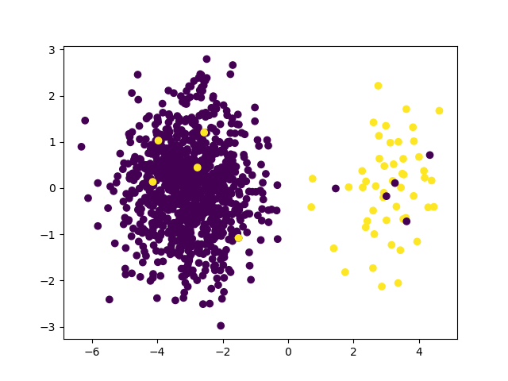

Note
Go to the end to download the full example code.
Distribute hard-to-classify datapoints over CV folds#
‘Instance hardness’ refers to the difficulty to classify an instance. The way
hard-to-classify instances are distributed over train and test sets has
significant effect on the test set performance metrics. In this example we
show how to deal with this problem. We are making the comparison with normal
StratifiedKFold cross-validation splitter.
# Authors: Frits Hermans, https://fritshermans.github.io
# License: MIT
print(__doc__)
Create an imbalanced dataset with instance hardness#
We create an imbalanced dataset with using scikit-learn’s
make_blobs function and set the class imbalance ratio to
5%.
To introduce instance hardness in our dataset, we add some hard to classify samples:
Compare cross validation scores using StratifiedKFold and InstanceHardnessCV#
Now, we want to assess a linear predictive model. Therefore, we should use cross-validation. The most important concept with cross-validation is to create training and test splits that are representative of the the data in production to have statistical results that one can expect in production.
By applying a standard StratifiedKFold
cross-validation splitter, we do not control in which fold the hard-to-classify
samples will be.
The InstanceHardnessCV splitter allows to
control the distribution of the hard-to-classify samples over the folds.
Let’s make an experiment to compare the results that we get with both splitters.
We use a LogisticRegression classifier and
cross_validate to calculate the cross validation
scores. We use average precision for scoring.
import pandas as pd
from sklearn.linear_model import LogisticRegression
from sklearn.model_selection import StratifiedKFold, cross_validate
from imblearn.model_selection import InstanceHardnessCV
logistic_regression = LogisticRegression()
results = {}
for cv in (
StratifiedKFold(n_splits=5, shuffle=True, random_state=10),
InstanceHardnessCV(estimator=LogisticRegression()),
):
result = cross_validate(
logistic_regression,
X,
y,
cv=cv,
scoring="average_precision",
)
results[cv.__class__.__name__] = result["test_score"]
results = pd.DataFrame(results)
The boxplot shows that the InstanceHardnessCV
splitter results in less variation of average precision than
StratifiedKFold splitter. When doing
hyperparameter tuning or feature selection using a wrapper method (like
RFECV) this will give more stable results.
Total running time of the script: (0 minutes 1.533 seconds)
Estimated memory usage: 204 MB